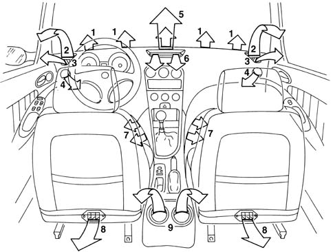
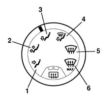

Introduction - CLIMATE CONTROL - MISCELLANEOUS
- Path
- Descriptions > 50 AUXILIARY UNITS > 5010 CLIMATE CONTROL - MISCELLANEOUS > Introduction - CLIMATE CONTROL - MISCELLANEOUS
- Kind
- system description
- Applies to
- all engines; all production periods
- Interactive page
- https://sloeber94.github.io/elrnDB-a156/en/#/3239221
Applies to: all engines; all production periods
GLOSSARY
Recirculation
This function of the ventilation system makes it possible to recirculate the same air in the passenger compartment, preventing the intake of outside air. It is a very useful function because it makes it possible to exclude the entry into the passenger compartment of undesirable outside air (fumes, polluted air when driving in traffic, etc.).
The climate control system has been designed to maximize the following two basic parameters:
- physical well-being
- demisting capacity
These objectives are achieved through the:
- air flow
- air distribution
- air quality
Air flow
The flow rate is the amount of air which the system is capable of introducing into the passenger compartment. A high flow rate makes it possible to reduce the response times to the adjustments and achieve a suitable exchange of air.
The four-speed electric fan guarantees an optimum flow rate and is extremely quiet.
Air distribution
This is designed to allow the air introduced into the vehicle to reach all areas of the passenger compartment.
The system has 9 groups of vents and operates according to 6 types of distribution which can be selected using the special control.

1, Centre vent for defrosting and/or demisting the windscreen 2, Adjustable upper side vents 3, Vents for defrosting and/or demisting the side windows 4, Adjustable and positionable side vents 5, Adjustable upper vent 6, Adjustable and positionable central vents 7, Front footwell air vents 8, Rear footwell air vents 9, Adjustable and postionable rear seat vents
Vents (2) and (5) and the ducts feature wide sections to allow extensive ventilation with a constant, slow flow of air. The other vents provide a more concentrated and directed flow.
The types of distribution make it possisble to direct the air towards the various vents in accordance with the diagram illustrated:
- Flow of air towards the centre and side vents with the possibility of adjustment through the controls on the actual vents.
- Distribution of flow between the passenger compartment centre, side and footwell vents.
- Flow of air towards the passenger footwell vents.
- Distribution of the flow between the windscreen/side windows and the footwell vents.
- Flow of air towards the windscreen and the side windows for defrosting/demisting.
- (only with air conditioner) Flow of air towards the windscreen for more rapid defrosting/demisting (see).

Air quality
The system is capable of lessening the unpleasant effect of pollution in certain driving conditions (stuck in traffic, driving through a tunnel, etc.).
This is achieved via the recirculation function (*) (see 5020 HEATER and 5040 AIR CONDITIONING CASING AND COMPONENTS ) and, for vehicles with air conditioning, through a special filter element (pollen filter) (see 5040 AIR CONDITIONING CASING AND COMPONENTS ).